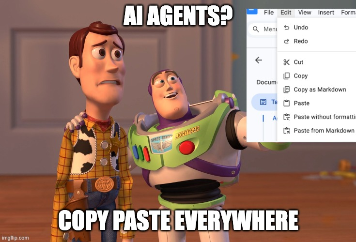

KeyClaude

Engineering Personal Assistant
✍️ The Problem
Engineers write dozens of messages a day.
- 💬 Slack · PR comments · doc updates · status notes
- 📤 Send it rough → it reflects poorly
- ⏱️ Polish it manually → lose focus
Either way, something suffers.
🔀 Context Switching Tax
Every lookup before replying is friction.
- 📋 Pull up notes → answer a thread
- 📊 Fetch data → make a decision
- 🧭 Surface context → join a 1:1
Small interruptions compound into lost hours.
🤖 AI Is Right There, But…

Open tab → paste → copy back → switch app → lose context
⚡ What KeyClaude Does
Invoke AI from any app. Without leaving it.
Select text → hit a key → rewritten text in clipboard- 🖥️ System-wide macOS shortcuts
- 🌐 Works in Slack, email, docs, terminal — anywhere
- ⚡ Result lands before you lose focus
🎬 Demo 1: Rewrite a Message
Select any text → hit shortcut → text is rewritten in place
| Shortcut | Mode | Best for |
|---|---|---|
⌃⌥R |
Default | Slack, email, PR comments |
⌃⌥P |
Leadership | Outcome-first · status updates |
⌃⌥E |
External | Blog posts · LinkedIn · conference |
Glass sound → paste → done ✅
🎬 Demo 2: Writing Insights
Every rewrite coaches you — silently, in the background.
bin/rewrite runs → result to clipboard
→ 2–3 writing patterns logged to writing-insights.mdNot “here’s what changed” — but: “here’s a habit that consistently weakens your writing.”
📈 Patterns accumulate. You improve over weeks, not just in this message.
🎬 Demo 3: Weekly Review
Close the week in one command:
bin/weekly-init # Monday: create structured note
bin/weekly-review # Friday: synthesize into 4 bulletsFocus Check · Cross-team Quality · Priority Shift · Priority Judgment
🗓️ No separate tool. No extra tab.
📊 What You Get
| Without KeyClaude | With KeyClaude |
|---|---|
| 😬 Rough messages sent | ✅ Polished in seconds |
| ⏳ 5 min manual editing | ⚡ Shortcut + paste |
| 🔇 No feedback on writing | 📝 Habits logged per rewrite |
| ❌ Weekly review = skipped | 🎯 4 bullets in one command |
📦 Install
- ⌨️ Assign keys: System Settings → Keyboard → Shortcuts → Services → Text
- 🚀 Or add
shortcuts/raycast/as Script Commands in Raycast
🔗 Everything Else Is at the Repo
🗺️ Roadmap · 📖 Install guide · ⌨️ Shortcuts · all the details